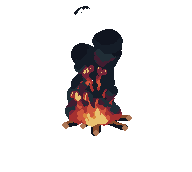

Vanilla 1.21.11 • Adults only • Long-term SMP
A chill Minecraft server for grown-ups.
TavernSMP is a relaxed 18+ vanilla SMP with a friendly, long-term community. We keep it simple: good builds, good chats, and Minecraft that still feels like Minecraft.
Server IP
thetavern-smp.com
Java Edition • 1.21.11
Copy